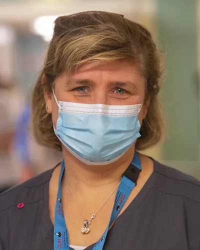

Home › What we do
What we do
A consultant-led, multi-stakeholder clinic delivering free assessment, treatment and onward referral for young children in Cork city northwest.
Who we are
Established in 2010, Kidscope is a consultant-led, multi-stakeholder community paediatric clinic which offers free health and developmental assessment and onward referral for children aged zero to six years living in Cork city northwest.
Kidscope uses the strengths of local services and practitioners to deliver high-quality, holistic approaches to child health and development.

Dr Louise Gibson
Dr Louise Gibson commenced in the role of Senior Lecturer/Consultant Community Paediatrician at Cork University Hospital in May 2010, where she set up the Kidscope Clinic in Knocknaheeny. Under the expert leadership of Dr Gibson, the clinic has supported over 2,400 children and families, making a significant impact on child health and wellbeing outcomes.
Our aims
Our three main aims of the clinic are:
- To provide assessment, treatment, and onward referral to children aged 0 to 6 years with health and developmental concerns.
- To improve child outcomes by providing a wrap-around community system of care for vulnerable children and their families.
- To act as a teaching clinic for undergraduate medical students attending University College Cork.
Who is involved
Our multidisciplinary team is made up of:
- A consultant paediatrician — Dr Louise Gibson
- Community medical doctors
- An advanced public health nurse practitioner
- Public health nurses
- A senior audiologist
- A clinic co-ordinator
- Both medical and audiology students from University College Cork
The team is also linked in with Let’s Grow Together, a service that provides community-based prevention and early intervention supports that promote child development and family wellbeing. Additionally, TUSLA Family Support also works alongside Kidscope to provide direct links to family support services and share knowledge of local community resources, promoting a coordinated, holistic approach to care.
Dr Louise Gibson, consultant paediatrician at Cork University Hospital, delivers the clinic every Thursday during the academic year, with the inter-disciplinary team comprised of medical students, community medical doctors, public health nurses, audiologists, and practitioners from local agencies Let’s Grow Together, NICHE Health Project, and TUSLA Family Support.